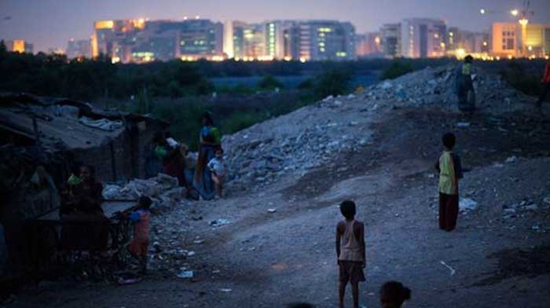

Overview
Before diving into the factors behind envorinmental inequality we need to understand what "enviornmental inequality" is refering to.
A 1987 study found that "[t]hree of every five African Americans and Latinos nationwide live in comunties that have illegal or abandoned toxic dumps." (Faber, 3) "Communities with one hazardous waste facility have twice the percentage of people of color as those with none, and the percentage triples in communities with two or more waste sites." (Faber, 3) A follow-up study in 1994 found that people of color were 47% more likely than whites to live near one of these toxic dumps. (Faber, 3)
Landfills are another source of environmental pollution. They have the potential to pollute water supplies, air through incinerators, and potentially contain cancer-causing compounds that nearby residents can be unknowingly exposed to. Faber's study found that while 50.8% of towns are what they considered to be low income, they are home to 58.9% of all incinerator ash landfills, 66.7% of all demolition landfills, 71.4% of all illegal sites, 74.5% of all sludge landfills, 69.5% of all tire piles, and 58.9% of all transfer stations (Faber, 5) He also found that communities where people of color were less than 5% of the population averaged 0.13 landfills per square mile while communities where people of color make up 25% or more of the population averaged 0.36 landfills per square mile. That is a three times higher rate of landfills for communities of color.

One in ten white children have asthma, one in nine Latino children have asthma, and one in six black children have asthma. (Keith Rushing) Iit is clear from this statistic that minorities are disproportunatly affected from greater exposure to air pollution. Barack Obama's daughter, Malia, is one of those children who have asthma. Barack Obama himself had said recently that it is linked to air pollution. Asthma is a growing problem that kills about nine people every day. "Although just 5.4% of all communities in the state are communities where people of color compose 15% or more of the population, they are home to 18.2% of all active power plants and 23.4% of all proposed power plants in the state. " (Faber, 7)

Charles Blow gives light enviornmental inequallity by writing about a current event taking place now in Louisiana in the NY Times article "Inequality in the Air We Breath". In the town of Gibsland, Louisiana, a munitions plant that closed down left untreated explosives for 40 years on in their sites. The explosives have contaminated the area and the EPA has conducted an emergency plan to burn 15 million pounds of M6 explosives. Robert Flournoy, an enviornmental toxicologist and former Lousiana Tech professor has spoke out against this plan, stating that it is not safe and the EPA has not released any data to suggest otherwise.
Blow asks "Can we imagine anyone, with a straight face, proposing to openly burn millions of pounds of explosives near Manhattan or Seattle?" This unequal treatment of low-income, minority towns such as Gibsland is a form of environmental racism in Charles Bow's eyes and in this incident it does appear that the EPA is treating this town of poor minority citizens different than it would a rich white community.